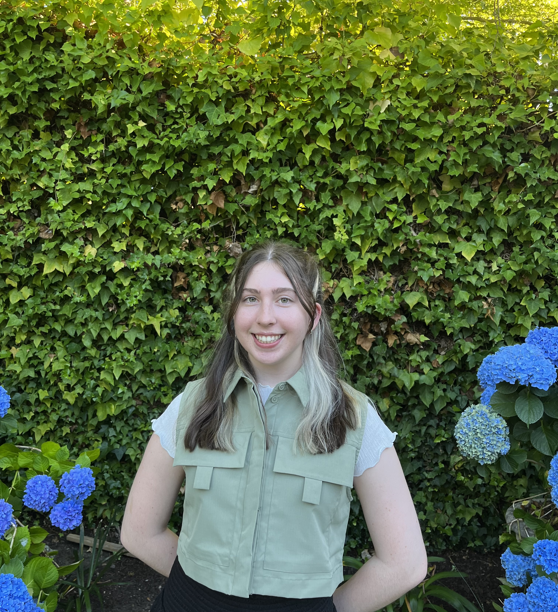

Home
My name is Amelia Liston, I'm a junior at Boston University pursuing a major in Computer Science and minor in Business
Administration. Outside of my classes, I'm President of the Girls Who Code chapter at BU, a JEDI Ambassador at BU Spark!,
and Secretary for BU PMReady. I completed a summer Software Engineering internship for the Notes App team at Apple last summer,
and will return for the summer of 2025 as well. In addition to Software Engineering, I'm interested in Product and Program
Management.
Welcome to my website, here you will find my Educational and Employment history;
as well as other information that may be of interest to you.